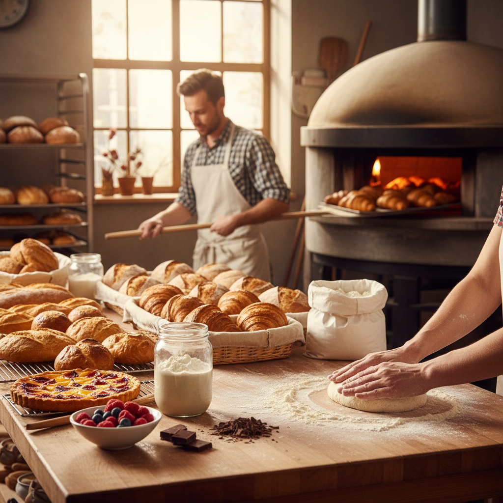
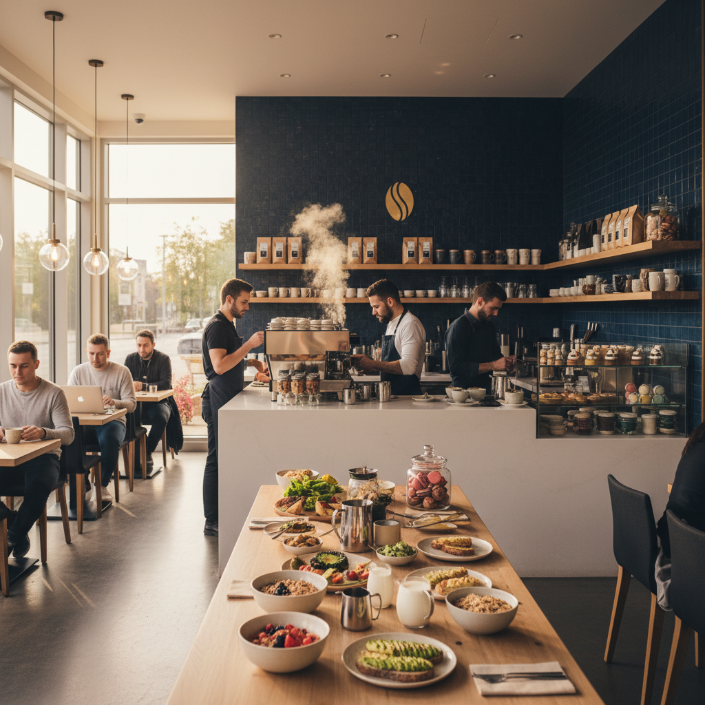
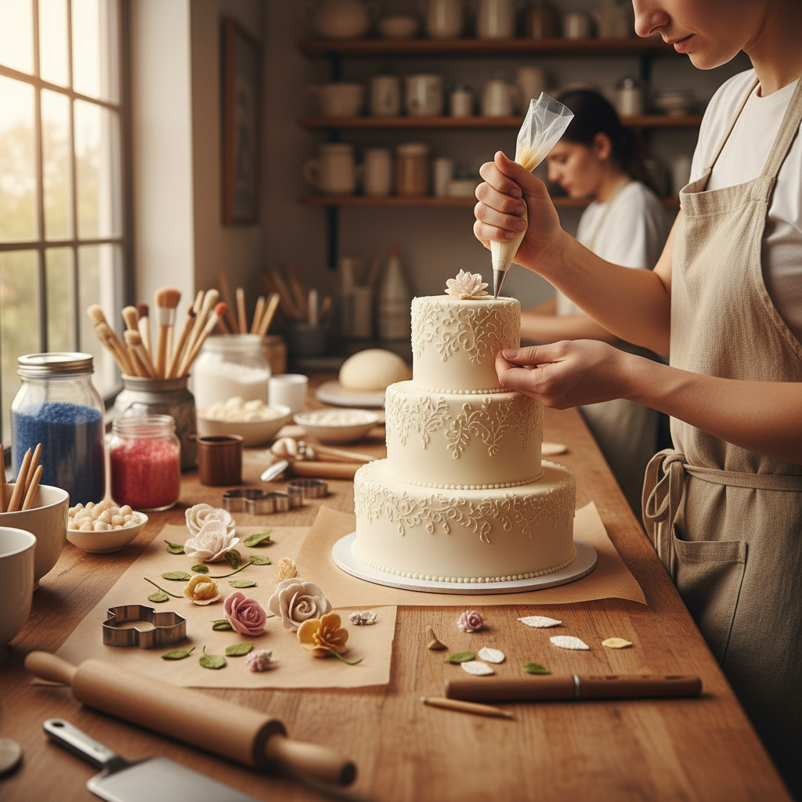

Traditional techniques, modern flavors, and the finest local ingredients. Handcrafted daily by Tom.
Discover Our MenuExplore our selection of daily baked goods, made with passion and precision.

Our 48-hour fermented sourdough features a crunchy crust and an airy, tangy interior. Baked fresh every morning.

Buttery, flaky croissants and exquisite Danishes made with high-grade Australian butter and seasonal fruits.

Bespoke cakes for your special Sydney events. From minimalist designs to elaborate multi-tiered masterpieces.
Tom’s Bakehouse started with a simple belief: bread should be honest, delicious, and communal. Located in the heart of Sydney, Tom brings years of international baking expertise to every loaf and pastry.
We source our flour from local regenerative farms and use traditional methods that respect the time required for flavor to develop naturally. No shortcuts, just pure dedication to the craft.
"The sourdough is life-changing. I drive 30 minutes every Saturday just for Tom's loaves."
"Best almond croissants I've ever had. Truly artisan quality that's hard to find these days."
"Tom made our wedding cake and it was both a work of art and delicious. Everyone was asking where it was from!"